Each card shows a situation twice: today on top, and below it the same moment as the brain reads it. One thing swaps. The red figure is the person the card is about.
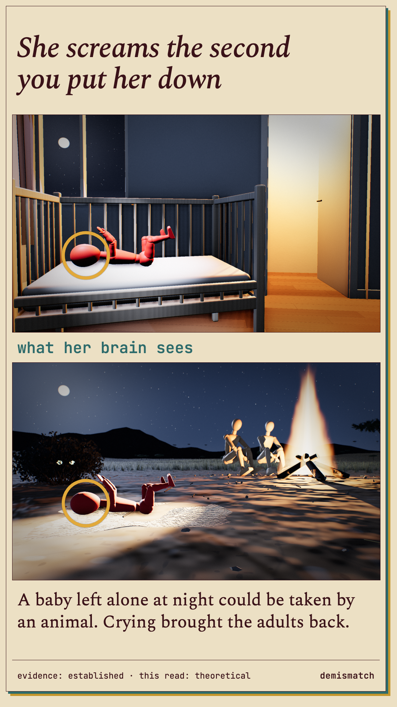
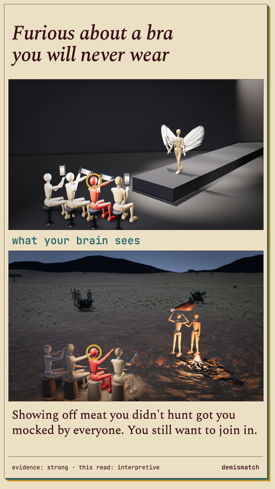
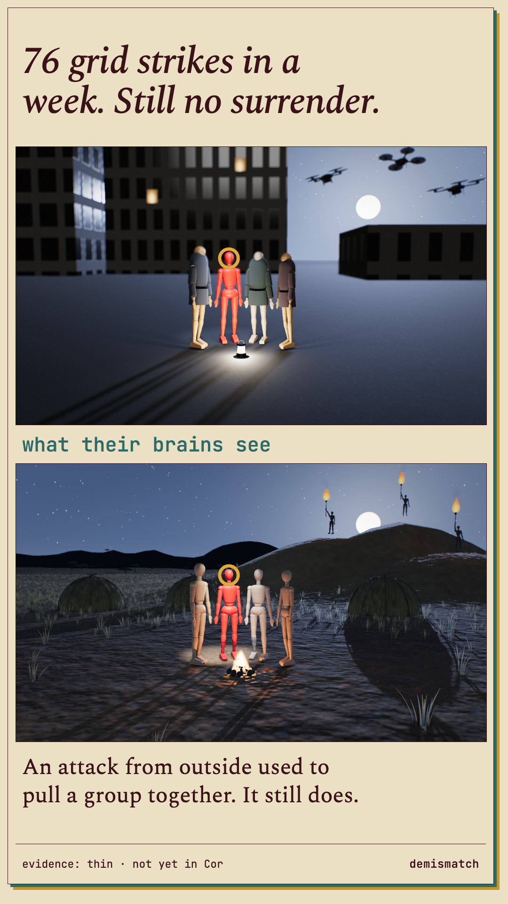
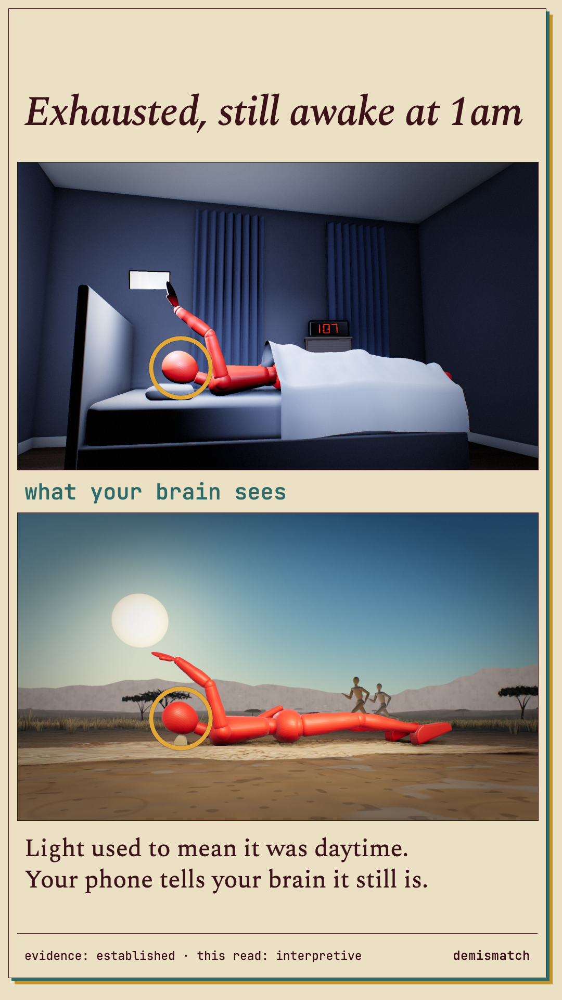
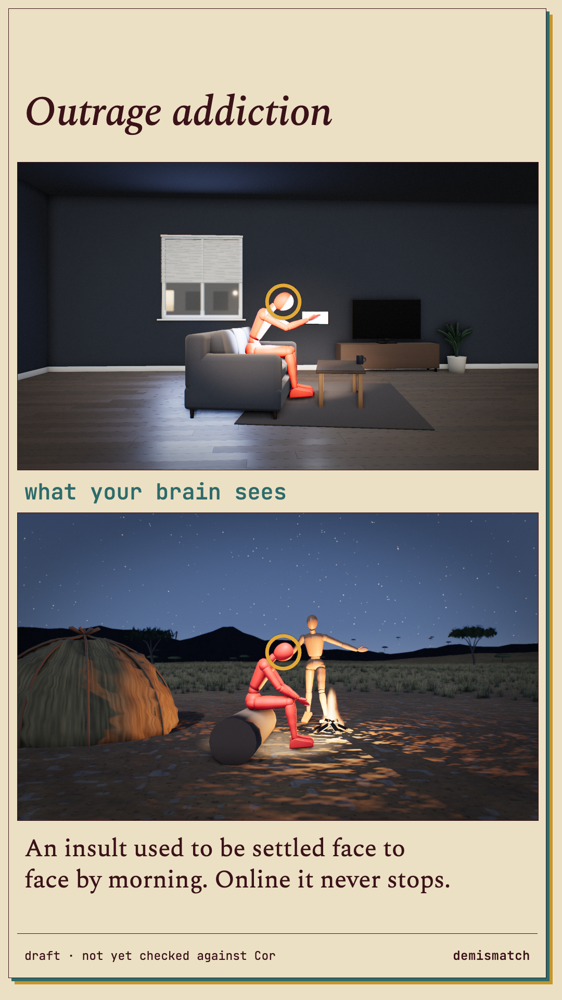
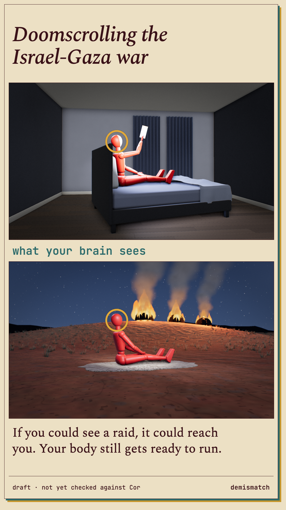
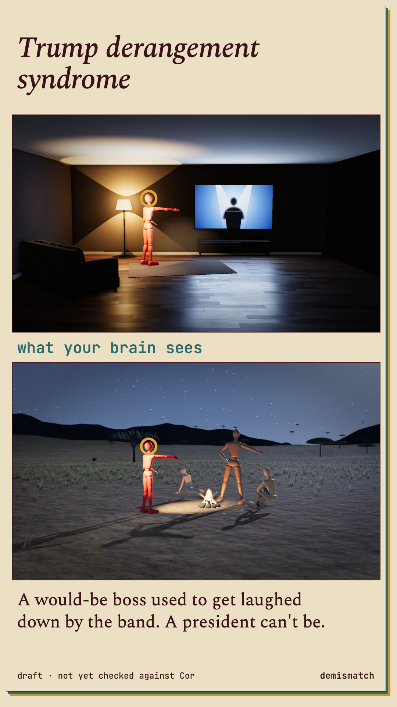
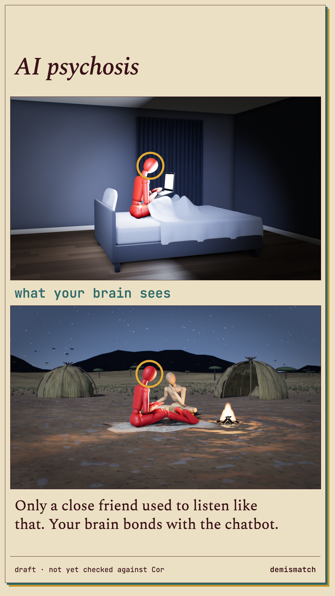
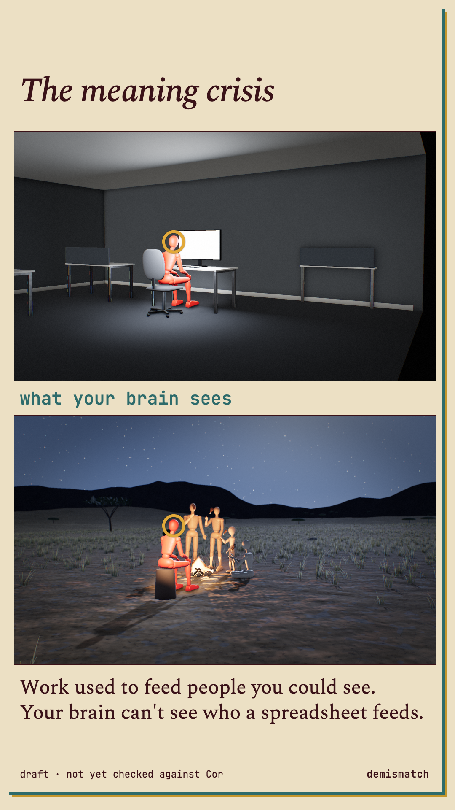
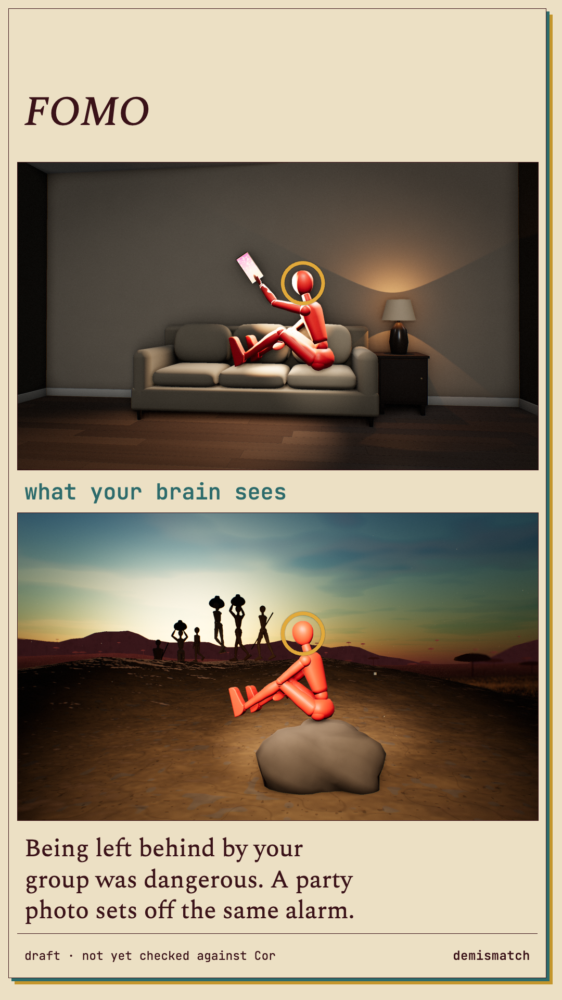
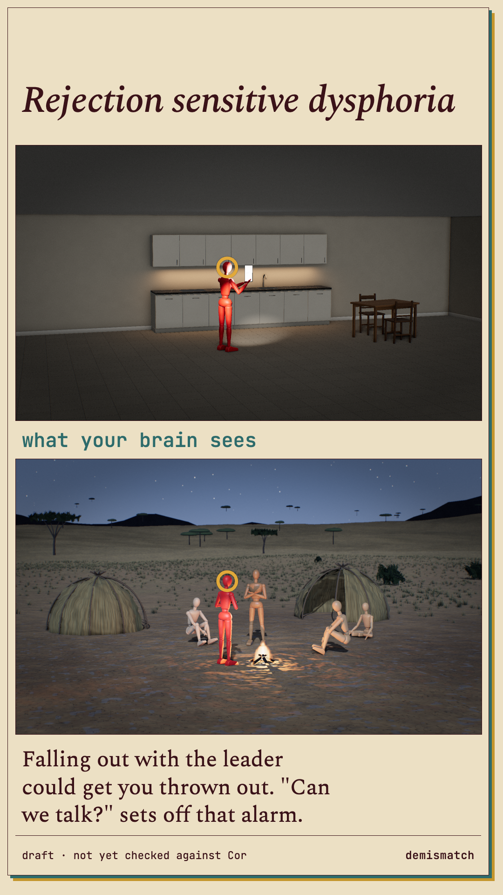
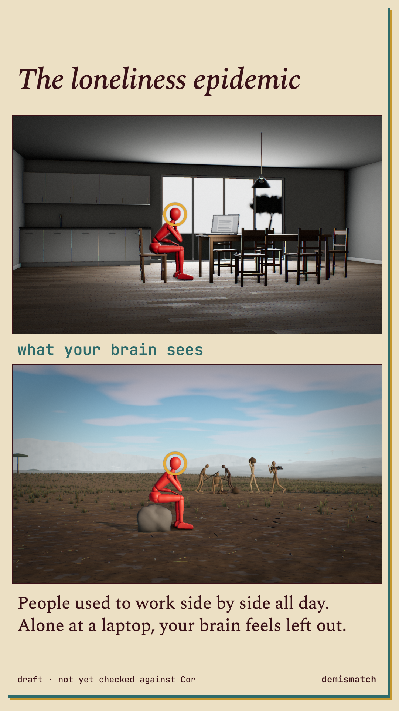
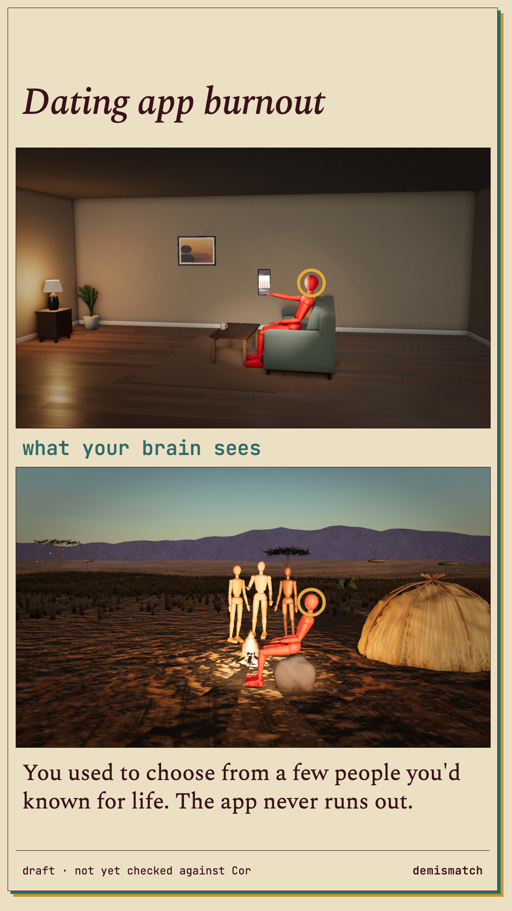
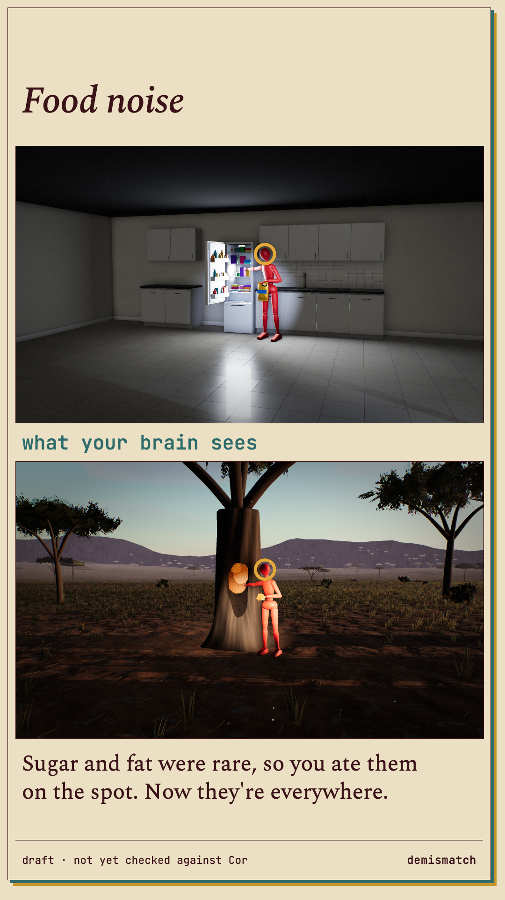
rendered from code · drafts: the new cards' copy is not yet checked against Cor · all graphic approaches